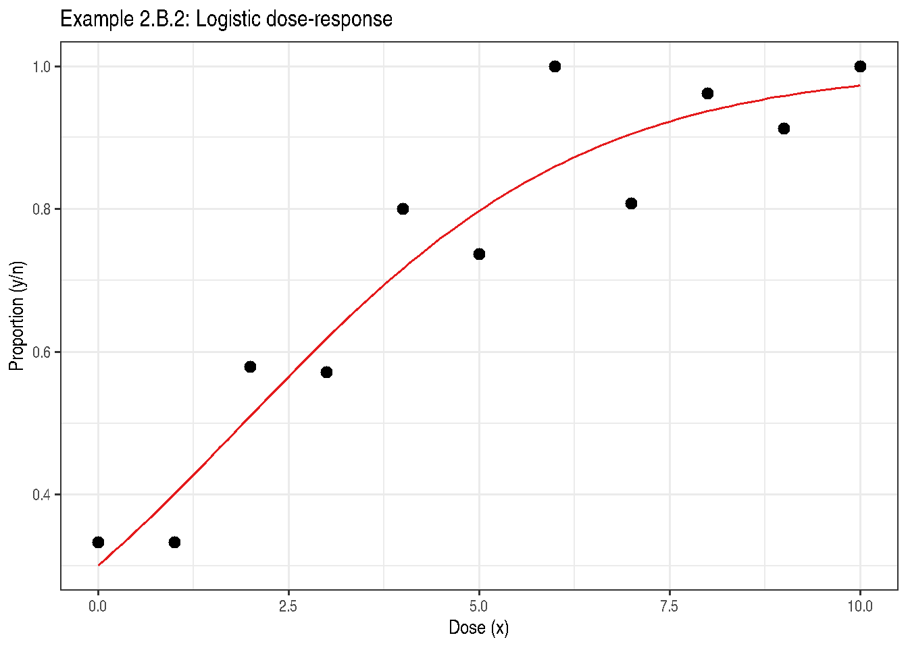

Chapter 2: Design Matters
Rationale, Small-Sample Methods, and Two-Sample Comparisons
2026-05-11
Source:vignettes/chapter-02-inference-basics.qmd
1 Overview
Chapter 2 establishes the inferential framework used throughout the book. Key topics include:
- Likelihood-based inference
- Wald, likelihood ratio, and score tests
- Small-sample adjustments (Kenward-Roger, Satterthwaite)
- Two-sample design examples
2 Example 2.B.2 — Dose-Response Binomial Data
'data.frame': 11 obs. of 3 variables:
$ x: int 0 1 2 3 4 5 6 7 8 9 ...
$ y: int 9 10 11 16 16 14 20 21 25 21 ...
$ n: int 27 30 19 28 20 19 20 26 26 23 ...
knitr::kable(DataExam2.B.2,
caption = "Example 2.B.2: Dose-response binomial data")| x | y | n |
|---|---|---|
| 0 | 9 | 27 |
| 1 | 10 | 30 |
| 2 | 11 | 19 |
| 3 | 16 | 28 |
| 4 | 16 | 20 |
| 5 | 14 | 19 |
| 6 | 20 | 20 |
| 7 | 21 | 26 |
| 8 | 25 | 26 |
| 9 | 21 | 23 |
| 10 | 28 | 28 |
2.1 Logistic regression
fit_2b2 <- stats::glm(
cbind(y, n - y) ~ x,
family = stats::binomial(link = "logit"),
data = DataExam2.B.2
)
summary(fit_2b2)
Call:
stats::glm(formula = cbind(y, n - y) ~ x, family = stats::binomial(link = "logit"),
data = DataExam2.B.2)
Coefficients:
Estimate Std. Error z value Pr(>|z|)
(Intercept) -0.84466 0.25438 -3.320 0.000899 ***
x 0.44275 0.06154 7.195 6.24e-13 ***
---
Signif. codes: 0 '***' 0.001 '**' 0.01 '*' 0.05 '.' 0.1 ' ' 1
(Dispersion parameter for binomial family taken to be 1)
Null deviance: 90.318 on 10 degrees of freedom
Residual deviance: 13.572 on 9 degrees of freedom
AIC: 46.133
Number of Fisher Scoring iterations: 5
if (requireNamespace("parameters", quietly = TRUE)) {
parameters::model_parameters(fit_2b2)
}| Parameter | Coefficient | SE | CI | CI_low | CI_high | z | df_error | p |
|---|---|---|---|---|---|---|---|---|
| (Intercept) | -0.8446576 | 0.2543790 | 0.95 | -1.3552905 | -0.3546914 | -3.320469 | Inf | 0.0008987 |
| x | 0.4427542 | 0.0615358 | 0.95 | 0.3286354 | 0.5709146 | 7.195068 | Inf | 0.0000000 |
if (requireNamespace("report", quietly = TRUE)) {
report::report(fit_2b2)
}Can't calculate log-loss.`performance_pcp()` only works for models with binary response values.Can't calculate log-loss.`performance_pcp()` only works for models with binary response values.We fitted a logistic model (estimated using ML) to predict cbind(y, n - y) with
x (formula: cbind(y, n - y) ~ x). The model's intercept, corresponding to x =
0, is at -0.84 (95% CI [-1.36, -0.35], p < .001). Within this model:
- The effect of x is statistically significant and positive (beta = 0.44, 95%
CI [0.33, 0.57], p < .001; Std. beta = 1.53, 95% CI [1.14, 1.97])
Standardized parameters were obtained by fitting the model on a standardized
version of the dataset. 95% Confidence Intervals (CIs) and p-values were
computed using a Wald z-distribution approximation.2.2 Predicted probabilities
xnew <- data.frame(x = seq(0, 10, by = 0.1))
xnew$p_hat <- stats::predict(fit_2b2, newdata = xnew, type = "response")
ggplot() +
geom_line(data = xnew, aes(x = x, y = p_hat), colour = "#E41A1C") +
geom_point(data = DataExam2.B.2,
aes(x = x, y = y / n), size = 2.5) +
labs(title = "Example 2.B.2: Logistic dose-response",
x = "Dose (x)", y = "Proportion (y/n)") +
theme_bw()
3 Example 2.B.3 — Three Treatment Comparison (Gaussian)
'data.frame': 6 obs. of 2 variables:
$ trt: Factor w/ 3 levels "1","2","3": 1 1 2 2 3 3
$ y : num 19 19.2 21.9 20.8 21.2 23.3
Call:
stats::lm(formula = y ~ trt, data = DataExam2.B.3)
Residuals:
1 2 3 4 5 6
-0.10 0.10 0.55 -0.55 -1.05 1.05
Coefficients:
Estimate Std. Error t value Pr(>|t|)
(Intercept) 19.1000 0.6868 27.811 0.000102 ***
trt2 2.2500 0.9713 2.317 0.103405
trt3 3.1500 0.9713 3.243 0.047734 *
---
Signif. codes: 0 '***' 0.001 '**' 0.01 '*' 0.05 '.' 0.1 ' ' 1
Residual standard error: 0.9713 on 3 degrees of freedom
Multiple R-squared: 0.7882, Adjusted R-squared: 0.647
F-statistic: 5.581 on 2 and 3 DF, p-value: 0.09749
anova(fit_2b3)| Df | Sum Sq | Mean Sq | F value | Pr(>F) | |
|---|---|---|---|---|---|
| trt | 2 | 10.53 | 5.2650000 | 5.581272 | 0.0974922 |
| Residuals | 3 | 2.83 | 0.9433333 | NA | NA |
trt emmean SE df lower.CL upper.CL
1 19.1 0.687 3 16.9 21.3
2 21.4 0.687 3 19.2 23.5
3 22.2 0.687 3 20.1 24.4
Confidence level used: 0.95
emmeans::contrast(emm_2b3, method = "pairwise", adjust = "tukey") contrast estimate SE df t.ratio p.value
trt1 - trt2 -2.25 0.971 3 -2.317 0.1963
trt1 - trt3 -3.15 0.971 3 -3.243 0.0940
trt2 - trt3 -0.90 0.971 3 -0.927 0.6632
P value adjustment: tukey method for comparing a family of 3 estimates 4 Example 2.B.4 — Binomial Response, Three Treatments
'data.frame': 6 obs. of 4 variables:
$ obs: int 1 2 3 4 5 6
$ trt: Factor w/ 3 levels "1","2","3": 1 1 2 2 3 3
$ Nij: int 13 7 13 13 12 15
$ Yij: int 2 2 4 9 8 7
fit_2b4 <- stats::glm(
cbind(Yij, Nij - Yij) ~ trt,
family = stats::binomial(link = "logit"),
data = DataExam2.B.4
)
summary(fit_2b4)
Call:
stats::glm(formula = cbind(Yij, Nij - Yij) ~ trt, family = stats::binomial(link = "logit"),
data = DataExam2.B.4)
Coefficients:
Estimate Std. Error z value Pr(>|z|)
(Intercept) -1.3863 0.5590 -2.480 0.0131 *
trt2 1.3863 0.6829 2.030 0.0424 *
trt3 1.6094 0.6801 2.367 0.0180 *
---
Signif. codes: 0 '***' 0.001 '**' 0.01 '*' 0.05 '.' 0.1 ' ' 1
(Dispersion parameter for binomial family taken to be 1)
Null deviance: 12.4483 on 5 degrees of freedom
Residual deviance: 5.5169 on 3 degrees of freedom
AIC: 28.116
Number of Fisher Scoring iterations: 4 trt prob SE df asymp.LCL asymp.UCL
1 0.200 0.0894 Inf 0.0771 0.428
2 0.500 0.0981 Inf 0.3167 0.683
3 0.556 0.0956 Inf 0.3691 0.728
Confidence level used: 0.95
Intervals are back-transformed from the logit scale
emmeans::contrast(emm_2b4, method = "pairwise") contrast odds.ratio SE df null z.ratio p.value
trt1 / trt2 0.25 0.171 Inf 1 -2.030 0.1051
trt1 / trt3 0.20 0.136 Inf 1 -2.367 0.0472
trt2 / trt3 0.80 0.441 Inf 1 -0.405 0.9136
P value adjustment: tukey method for comparing a family of 3 estimates
Tests are performed on the log odds ratio scale 5 Example 2.B.7 — Two-Way Factorial
data(DataExam2.B.7)
DataExam2.B.7$Rep <- factor(DataExam2.B.7$Rep)
DataExam2.B.7$a <- factor(DataExam2.B.7$a)
DataExam2.B.7$b <- factor(DataExam2.B.7$b)
str(DataExam2.B.7)'data.frame': 16 obs. of 4 variables:
$ Rep: Factor w/ 4 levels "1","2","3","4": 1 1 1 1 2 2 2 2 3 3 ...
$ a : Factor w/ 2 levels "1","2": 1 1 2 2 1 1 2 2 1 1 ...
$ b : Factor w/ 2 levels "1","2": 1 2 1 2 1 2 1 2 1 2 ...
$ y : num 41 40.6 42.7 37.1 40 37.1 39.3 24.2 38.2 36.5 ...
fit_2b7 <- lmerTest::lmer(
y ~ a * b + (1 | Rep),
data = DataExam2.B.7,
control = lme4::lmerControl(optimizer = "bobyqa")
)
summary(fit_2b7)Linear mixed model fit by REML. t-tests use Satterthwaite's method [
lmerModLmerTest]
Formula: y ~ a * b + (1 | Rep)
Data: DataExam2.B.7
Control: lme4::lmerControl(optimizer = "bobyqa")
REML criterion at convergence: 70.8
Scaled residuals:
Min 1Q Median 3Q Max
-1.6890 -0.2555 0.1485 0.3609 1.2943
Random effects:
Groups Name Variance Std.Dev.
Rep (Intercept) 9.899 3.146
Residual 8.835 2.972
Number of obs: 16, groups: Rep, 4
Fixed effects:
Estimate Std. Error df t value Pr(>|t|)
(Intercept) 40.975 2.164 6.530 18.933 5.96e-07 ***
a2 0.150 2.102 9.000 0.071 0.945
b2 -2.725 2.102 9.000 -1.297 0.227
a2:b2 -6.875 2.972 9.000 -2.313 0.046 *
---
Signif. codes: 0 '***' 0.001 '**' 0.01 '*' 0.05 '.' 0.1 ' ' 1
Correlation of Fixed Effects:
(Intr) a2 b2
a2 -0.486
b2 -0.486 0.500
a2:b2 0.343 -0.707 -0.707
anova(fit_2b7)| Sum Sq | Mean Sq | NumDF | DenDF | F value | Pr(>F) | |
|---|---|---|---|---|---|---|
| a | 43.23063 | 43.23063 | 1 | 9 | 4.893071 | 0.0542653 |
| b | 151.90562 | 151.90562 | 1 | 9 | 17.193484 | 0.0024973 |
| a:b | 47.26562 | 47.26562 | 1 | 9 | 5.349774 | 0.0460132 |
emm_2b7 <- emmeans::emmeans(fit_2b7, ~ a * b)
emmeans::contrast(emm_2b7, method = "pairwise",
by = "a", adjust = "tukey")a = 1:
contrast estimate SE df t.ratio p.value
b1 - b2 2.73 2.1 9 1.297 0.2271
a = 2:
contrast estimate SE df t.ratio p.value
b1 - b2 9.60 2.1 9 4.568 0.0014
Degrees-of-freedom method: kenward-roger 6 Key Takeaways
- Likelihood-based inference is the foundation of GLMMs.
- For Gaussian models, \(t\)- and \(F\)-tests follow exactly; for GLMMs, Wald and likelihood ratio statistics are approximate.
-
emmeansprovides Satterthwaite-adjusted degrees of freedom for mixed model comparisons.
7 References
Stroup, W. W., Ptukhina, M., and Garai, S. (2024). Generalized Linear Mixed Models: Modern Concepts, Methods and Applications (2nd ed.). CRC Press.